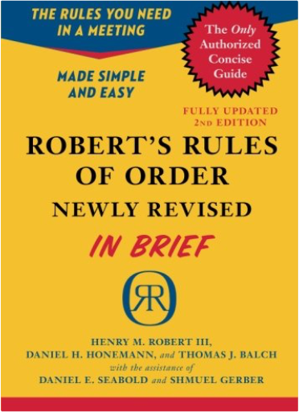
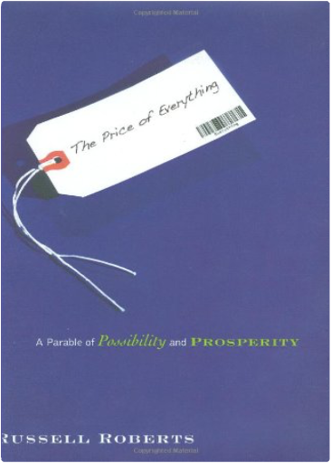
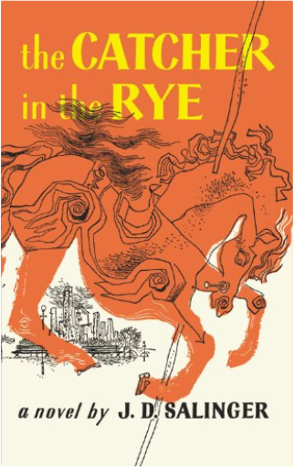
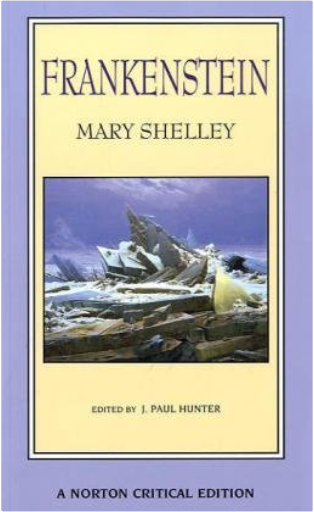
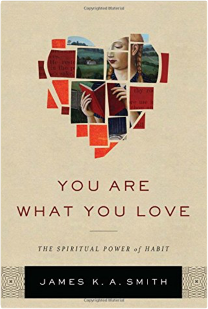
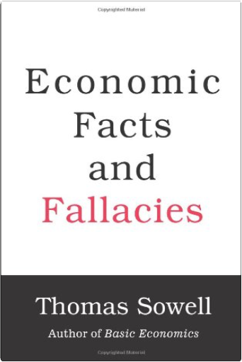
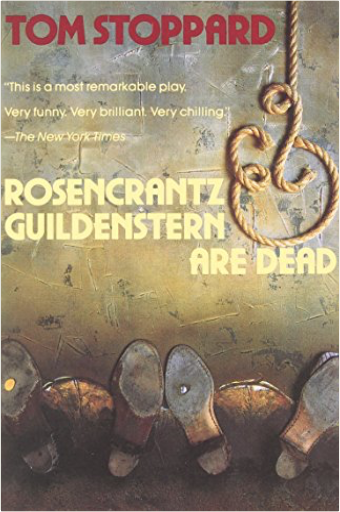

  Robert’s Rules of Order, Newly Revised, In Brief was first published in 2005 to meet the need for a simple and short book on parliamentary procedure. This second edition of In Brief is now updated and revised to match the new full edition of Robert’s Rules of Order, Newly Revised, also published this year.  Stanford University student and Cuban American tennis prodigy Ramon Fernandez is outraged when a nearby mega-store hikes its prices the night of an earthquake. He crosses paths with provost and economics professor Ruth Lieber when he plans a campus protest against the price-gouging retailer—which is also a major donor to the university. Ruth begins a dialogue with Ramon about prices, prosperity, and innovation and their role in our daily lives. Is Ruth trying to limit the damage from Ramon's protest? Or does she have something altogether different in mind? The Plot Against AmericaPhilip Roth In an astonishing feat of empathy and narrative invention, our most ambitious novelist imagines an alternate version of American history.  Anyone who has read J.D. Salinger's New Yorker stories ? particularly A Perfect Day for Bananafish, Uncle Wiggily in Connecticut, The Laughing Man, and For Esme ? With Love and Squalor, will not be surprised by the fact that his first novel is fully of children. The hero-narrator of THE CATCHER IN THE RYE is an ancient child of sixteen, a native New Yorker named Holden Caulfield. Through circumstances that tend to preclude adult, secondhand description, he leaves his prep school in Pennsylvania and goes underground in New York City for three days. The boy himself is at once too simple and too complex for us to make any final comment about him or his story. Perhaps the safest thing we can say about Holden is that he was born in the world not just strongly attracted to beauty but, almost, hopelessly impaled on it. There are many voices in this novel: children's voices, adult voices, underground voices-but Holden's voice is the most eloquent of all. Transcending his own vernacular, yet remaining marvelously faithful to it, he issues a perfectly articulated cry of mixed pain and pleasure. However, like most lovers and clowns and poets of the higher orders, he keeps most of the pain to, and for, himself. The pleasure he gives away, or sets aside, with all his heart. It is there for the reader who can handle it to keep. The Taming of the ShrewWilliam Shakespeare Folger Shakespeare Library The TempestWilliam Shakespeare, Barbara A. Mowat, Paul Werstine Each edition includes:  The text of this Norton Critical Edition is that of the 1818 first edition, published in three volumes by Lackington, Hughes, Harding, Mavor, and Jones, in which only obvious typographical errors have been corrected. This text represents what Frankenstein's first readers encountered and is the text favored by scholars. A special critical section, Composition and Revision, includes essays by M. K. Joseph and Anne Mellor that address the issues surrounding teachers' choice of text.Contemporary perspectives of the text are provided in two sections: Contexts helps place the novel in relation to the mind of its creator through writings by Mary Shelley, Percy Bysshe Shelley, Lord Byron, and John William Polidori; Nineteenth-Century Responses collects six reactions to the book from the years 1818 to 1886. | CoolidgeAmity Shlaes Amity Shlaes, author of The Forgotten Man, delivers a brilliant and provocative reexamination of America’s thirtieth president, Calvin Coolidge, and the decade of unparalleled growth that the nation enjoyed under his leadership. In this riveting biography, Shlaes traces Coolidge’s improbable rise from a tiny town in New England to a youth so unpopular he was shut out of college fraternities at Amherst College up through Massachusetts politics. After a divisive period of government excess and corruption, Coolidge restored national trust in Washington and achieved what few other peacetime presidents have: He left office with a federal budget smaller than the one he inherited. A man of calm discipline, he lived by example, renting half of a two-family house for his entire political career rather than compromise his political work by taking on debt. Renowned as a throwback, Coolidge was in fact strikingly modern—an advocate of women’s suffrage and a radio pioneer. At once a revision of man and economics, Coolidge gestures to the country we once were and reminds us of qualities we had forgotten and can use today. HyperionDan Simmons On the world called Hyperion, beyond the law of the Hegemony of Man, there waits the creature called the Shrike. There are those who worship it. There are those who fear it. And there are those who have vowed to destroy it. In the Valley of the Time Tombs, where huge, brooding structures move backward through time, the Shrike waits for them all. On the eve of Armageddon, with the entire galaxy at war, seven pilgrims set forth on a final voyage to Hyperion seeking the answers to the unsolved riddles of their lives. Each carries a desperate hope—and a terrible secret. And one may hold the fate of humanity in his hands.   You are what you love. But you might not love what you think.  Economic Facts and Fallacies exposes some of the most popular fallacies about economic issues-and does so in a lively manner and without requiring any prior knowledge of economics by the reader. These include many beliefs widely disseminated in the media and by politicians, such as mistaken ideas about urban problems, income differences, male-female economic differences, as well as economics fallacies about academia, about race, and about Third World countries. One of the themes of Economic Facts and Fallacies is that fallacies are not simply crazy ideas but in fact have a certain plausibility that gives them their staying power-and makes careful examination of their flaws both necessary and important, as well as sometimes humorous. Written in the easy-to-follow style of the author’s Basic Economics, this latest book is able to go into greater depth, with real world examples, on specific issues.  Acclaimed as a modern dramatic masterpiece, Rosencrantz & Guildenstern are Dead is the fabulously inventive tale of Hamlet as told from the worm’s-eve view of the bewildered Rosencrantz and Guildenstern, two minor characters in Shakespeare’s play. In Tom Stoppard’s best-known work, this Shakespearean Laurel and Hardy finally get a chance to take the lead role, but do so in a world where echoes of Waiting for Godot resound, where reality and illusion intermix, and where fate leads our two heroes to a tragic but inevitable end. The Hundred Secret SensesAmy Tan The Hundred Secret Senses is an exultant novel about China and America, love and loyalty, the identities we invent and the true selves we discover along the way. Olivia Laguni is half-Chinese, but typically American in her uneasiness with her patchwork family. And no one in Olivia's family is more embarrassing to her than her half-sister, Kwan Li. For Kwan speaks mangled English, is cheerfully deaf to Olivia's sarcasm, and sees the dead with her "yin eyes." Fear and Loathing: On the Campaign Trail '72Hunter S. Thompson With the same drug-addled alacrity and jaundiced wit that made Fear and Loathing in Las Vegas a hilarious hit, Hunter S. Thompson turns his savage eye and gonzo heart to the repellent and seductive race for President.He deconstructs the 1972 campaigns of idealist George McGovern and political hack Richard Nixon, ending up with a political vision that is eerily prophetic.A classic! |

John's Library
Collection Total:
163 Items
163 Items
Last Updated:
Apr 7, 2017
Apr 7, 2017
 Made with Delicious Library
Made with Delicious Library